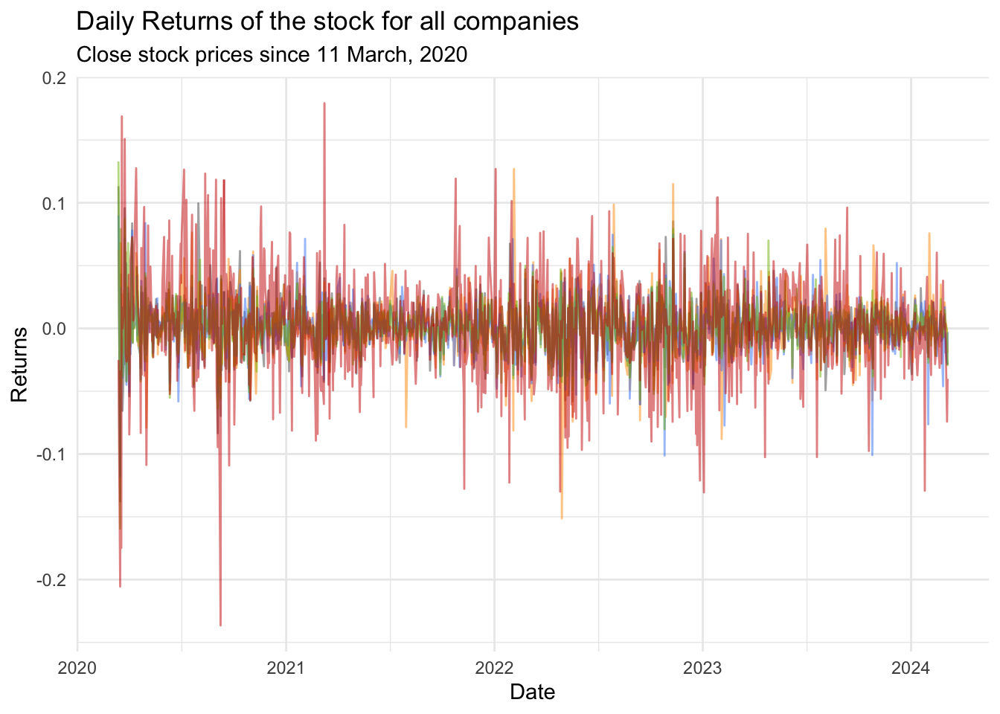

4 Analyzing multiple companies
Now we’ll carry the same analysis for multiple companies
We import the data and prepare it for analysis
4.1 Plotting the stock price
- Let’s plot the whole
returns_data |>
ggplot(aes(x = date, y = close, group = symbol, color = symbol))+
geom_line(alpha=0.5)+
labs(
title = str_glue("Daily price for {glue::glue_collapse(company_tickers, sep = ', ')}"),
subtitle = str_glue("Close stock prices since {start_date |> format('%d %B, %Y')}"),
x = "Date",
y = "Close Price"
) +
theme_minimal()+
scale_color_manual(values = company_colors)- A single chart is not very satisfactory, even if we try to make differentiate companies with colors.
4.2 Visualising the log-returns
- As the interest is in the
log-returns, let’s plot the returns in a single frame
returns_data |>
ggplot(aes(x = date, y = daily_log_returns, group = symbol, color = symbol))+
geom_line(alpha = 0.5) +
labs(
title = str_glue("Daily Returns of the stock for all companies"),
subtitle = str_glue("Close stock prices since {start_date |> format('%d %B, %Y')}"),
x = "Date",
y = "Returns"
) +
theme_minimal()+
theme(legend.position = "none")+
scale_color_manual(values = company_colors)Warning: Removed 5 rows containing missing values or values outside the scale range
(`geom_line()`).

Create a faceted chart
- There’s a problem here, as you can see. The log-returns are confounded and become difficult to distinguish in spite of the use of relevant colors!
4.3 Creating a faceted chart
To distinguish better, we can use the function
facet_wrap().This creates a _mini_ plot according to a variable
returns_data |>
ggplot(aes(x = date, y = daily_log_returns, group = symbol, color = symbol))+
geom_line(alpha = 0.5) +
labs(
title = str_glue("Daily Returns of the stock for all companies"),
subtitle = str_glue("Close stock prices since {start_date |> format('%d %B, %Y')}"),
x = "Date",
y = "Returns"
) +
theme_minimal()+
1 facet_grid(rows = vars(symbol)) +
theme(legend.position = "none")+
scale_color_manual(values = company_colors)- 1
- On this line we added the faceted chart
What can we see?
Uncertainties in the supply chains produced by the international crises seem to have affected companies in the same way
However the magnitude of these impacts seems to have been different across companies, e.g.
- TSLA shows significantly more risk
4.4 Average Returns for all companies
mean_and_sd <-
returns_data |>
mutate(year = year(date)) |>
group_by(symbol, year) |>
summarise(
average_return = mean(daily_log_returns, na.rm = TRUE),
sd_return = sd(daily_log_returns, na.rm = TRUE)
) |>
ungroup()`summarise()` has grouped output by 'symbol'. You can override using the
`.groups` argument.mean_and_sd |>
select(-sd_return) |>
pivot_wider(names_from = year,values_from = average_return) |>
gt() |>
tab_header(
title= "Average Yearly returns of Tech companies",
subtitle = str_glue("From {start_date |> format('%d %b, %Y')} to {Sys.Date() |> format('%d %b, %Y')}")) |>
fmt_number(columns = -symbol, decimals = 4) |>
tab_style(
style = list(
cell_fill(color = "lightgreen"),
cell_text(color = "white")),
locations = list(
cells_body(columns =`2020`,
rows= `2020`>0 ),
cells_body(columns =`2021`,
rows= `2021`>0 ),
cells_body(columns =`2022`,
rows= `2022`>0 ),
cells_body(columns =`2022`,
rows= `2022`>0 ),
cells_body(columns =`2023`,
rows= `2023`>0 ),
cells_body(columns =`2024`,
rows= `2024`>0 )
)
) |>
tab_style(
style = list(
cell_fill(color = "red"),
cell_text(color = "white")),
locations = list(
cells_body(columns =`2020`,
rows= `2020`<=0 ),
cells_body(columns =`2021`,
rows= `2021`<=0 ),
cells_body(columns =`2022`,
rows= `2022`<=0 ),
cells_body(columns =`2022`,
rows= `2022`<= 0 ),
cells_body(columns =`2023`,
rows= `2023`<=0 ),
cells_body(columns =`2024`,
rows= `2024`<=0 )
)
)| Average Yearly returns of Tech companies | |||||
|---|---|---|---|---|---|
| From 11 Mar, 2020 to 06 Mar, 2024 | |||||
| symbol | 2020 | 2021 | 2022 | 2023 | 2024 |
| AAPL | 0.0037 | 0.0012 | −0.0012 | 0.0016 | −0.0028 |
| AMZN | 0.0033 | 0.0001 | −0.0027 | 0.0024 | 0.0031 |
| GOOG | 0.0022 | 0.0020 | −0.0019 | 0.0019 | −0.0012 |
| MSFT | 0.0023 | 0.0016 | −0.0013 | 0.0018 | 0.0016 |
| TSLA | 0.0090 | 0.0016 | −0.0042 | 0.0028 | −0.0072 |
4.5 Risk (SD) all companies
mean_and_sd |>
select(-average_return) |>
pivot_wider(names_from = year,values_from = sd_return) |>
gt() |>
tab_header(
title= "Average Yearly SDs of Tech companies",
subtitle = str_glue("From {start_date |> format('%d %b, %Y')} to {Sys.Date() |> format('%d %b, %Y')}")) |>
fmt_number(columns = -symbol, decimals = 4) |>
tab_style(
style = list(
cell_fill(color = "red"),
cell_text(color = "white")),
locations = list(
cells_body(columns =`2020`,
rows= `2020`>=0.020),
cells_body(columns =`2021`,
rows= `2021`>=0.020 ),
cells_body(columns =`2022`,
rows= `2022`>=0.020 ),
cells_body(columns =`2022`,
rows= `2022`>=0.020 ),
cells_body(columns =`2023`,
rows= `2023`>=0.020 ),
cells_body(columns =`2024`,
rows= `2024`>=0.020)
)
)| Average Yearly SDs of Tech companies | |||||
|---|---|---|---|---|---|
| From 11 Mar, 2020 to 06 Mar, 2024 | |||||
| symbol | 2020 | 2021 | 2022 | 2023 | 2024 |
| AAPL | 0.0283 | 0.0158 | 0.0224 | 0.0128 | 0.0128 |
| AMZN | 0.0237 | 0.0152 | 0.0316 | 0.0207 | 0.0181 |
| GOOG | 0.0234 | 0.0149 | 0.0244 | 0.0193 | 0.0183 |
| MSFT | 0.0268 | 0.0132 | 0.0223 | 0.0157 | 0.0122 |
| TSLA | 0.0538 | 0.0342 | 0.0423 | 0.0340 | 0.0310 |